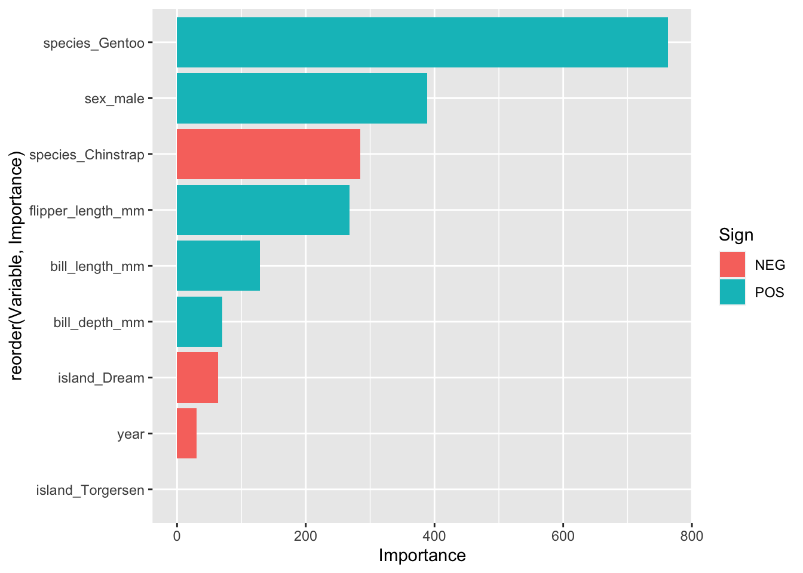

# A tibble: 2 × 4
.metric .estimator .estimate .config
<chr> <chr> <dbl> <chr>
1 rmse standard 326. Preprocessor1_Model1
2 rsq standard 0.819 Preprocessor1_Model1
Inspektion der Tuningparameter
autoplot(wf1_fit)
Die Standard-Wahl der Tuningparameter-Werte war offenbar nicht so ideal, zumindest sieht man kaum Unterschiede zwischen der Modellgüte in Abhängigkeit von den Werten der Tuningparameter.
vi_preds %>%ggplot(aes(x = Importance, y =reorder(Variable, Importance), fill = Sign)) +geom_col()

Man beachte: Für regulierte Modelle sind Zentrierung und Skalierung nötig.
Categories:
tidymodels
statlearning
lasso
lm
string
template
Source Code
---exname: tidymodels-lasso3expoints: 1extype: stringexsolution: NAcategories:- tidymodels- statlearning- lasso- lm- stringdate: '2023-05-17'slug: tidymodels-lasso3title: tidymodels-lasso3---# Aufgabe<!-- Schreiben Sie eine Vorlage für eine prädiktive Analyse mit Tidymodels! -->Schreiben Sie eine prototypische Analyse für ein Vorhersagemodell mit dem *Lasso*.Berichten Sie, welche Prädiktoren nach dem Lasso im Modell verbleiben.Hinweise:- Tunen Sie die Penalisierung.- Verwenden Sie Kreuzvalidierung.- Verwenden Sie Standardwerte, wo nicht anders angegeben.- Fixieren Sie Zufallszahlen auf den Startwert 42.- Verwenden Sie den Datensatz `penguins`.- Modellformel: `body_mass_g ~ .`</br></br></br></br></br></br></br></br></br></br># Lösung## Standardvorgehen```{r warning=FALSE, message=FALSE}# 2023-05-14# Setup:library(tidymodels)library(tidyverse)library(tictoc) # Zeitmessunglibrary(vip) # Variablenbedeutung# Data:d_path <- "https://vincentarelbundock.github.io/Rdatasets/csv/palmerpenguins/penguins.csv"d <- read_csv(d_path)# drop rows with NA in outcome variable:d <- d %>% drop_na(body_mass_g)set.seed(42)d_split <- initial_split(d)d_train <- training(d_split)d_test <- testing(d_split)# model:mod_lasso <- linear_reg(mode = "regression", penalty = tune(), mixture = 1, engine = "glmnet")# cv:set.seed(42)rsmpl <- vfold_cv(d_train)# recipe:rec1_plain <- recipe(body_mass_g ~ ., data = d_train) %>% update_role("rownames", new_role = "id") %>% step_normalize(all_numeric_predictors()) %>% step_dummy(all_nominal_predictors()) %>% step_impute_bag(all_predictors())# check:d_train_baked <- prep(rec1_plain) %>% bake(new_data = NULL)na_n <- sum(is.na(d_train_baked))# workflow:wf1 <- workflow() %>% add_model(mod_lasso) %>% add_recipe(rec1_plain)# tuning:tic()wf1_fit <- wf1 %>% tune_grid( resamples = rsmpl)toc()# best candidate:show_best(wf1_fit)# finalize wf:wf1_final <- wf1 %>% finalize_workflow(select_best(wf1_fit))wf1_fit_final <- wf1_final %>% last_fit(d_split)# Modellgüte im Test-Set:collect_metrics(wf1_fit_final)```## Inspektion der Tuningparameter```{r}autoplot(wf1_fit)```Die Standard-Wahl der Tuningparameter-Werte war offenbar nicht so ideal,zumindest sieht man kaum Unterschiede zwischen der Modellgüte in Abhängigkeit von den Werten der Tuningparameter.## Variablenbedeutung```{r}library(vip)vi_preds <-wf1_fit_final %>%extract_fit_engine() %>%vi()vi_preds``````{r}vi_preds %>%ggplot(aes(x = Importance, y =reorder(Variable, Importance), fill = Sign)) +geom_col()```Man beachte: Für regulierte Modelle sind Zentrierung und Skalierung nötig.---Categories: - tidymodels- statlearning- lasso- lm- string- template